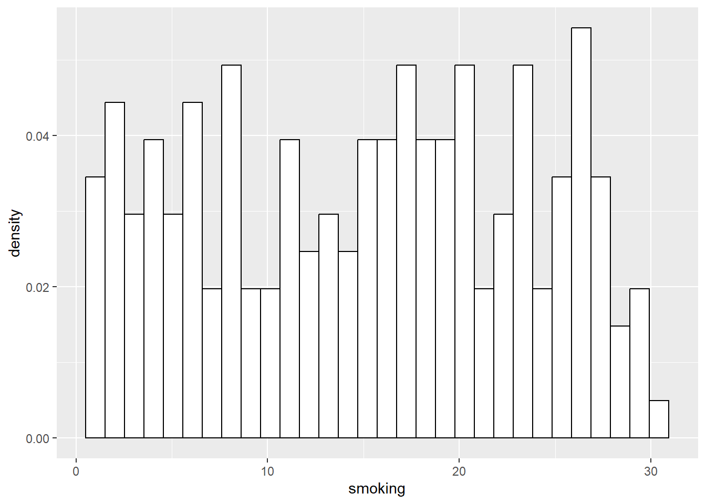
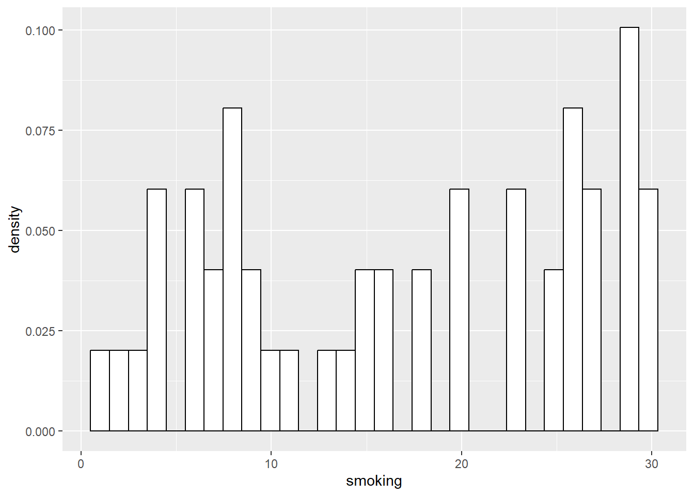
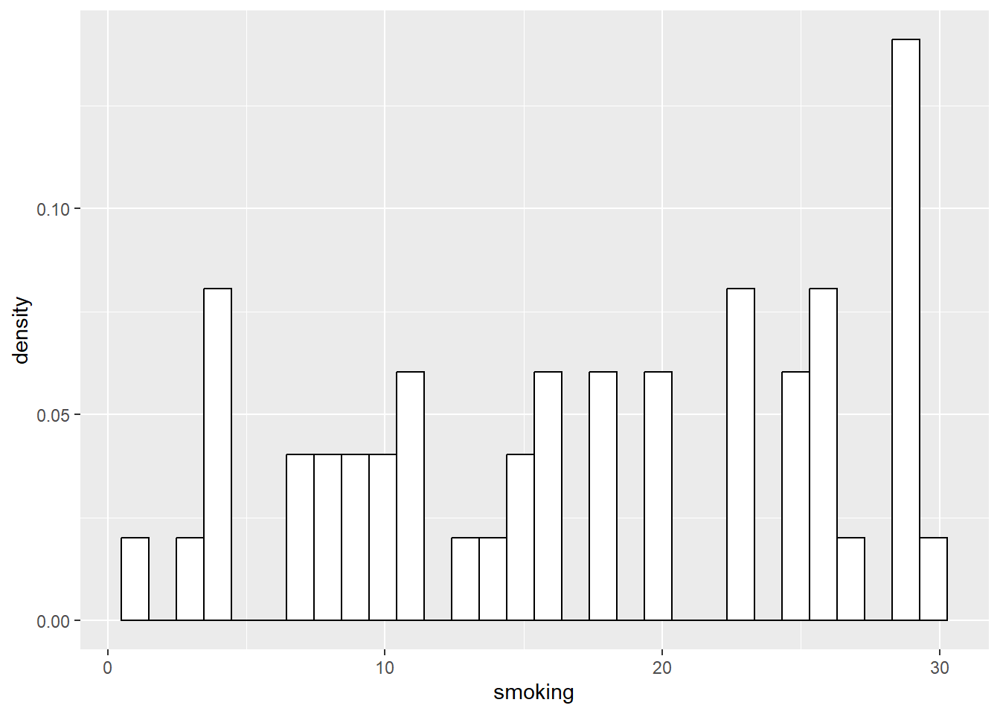
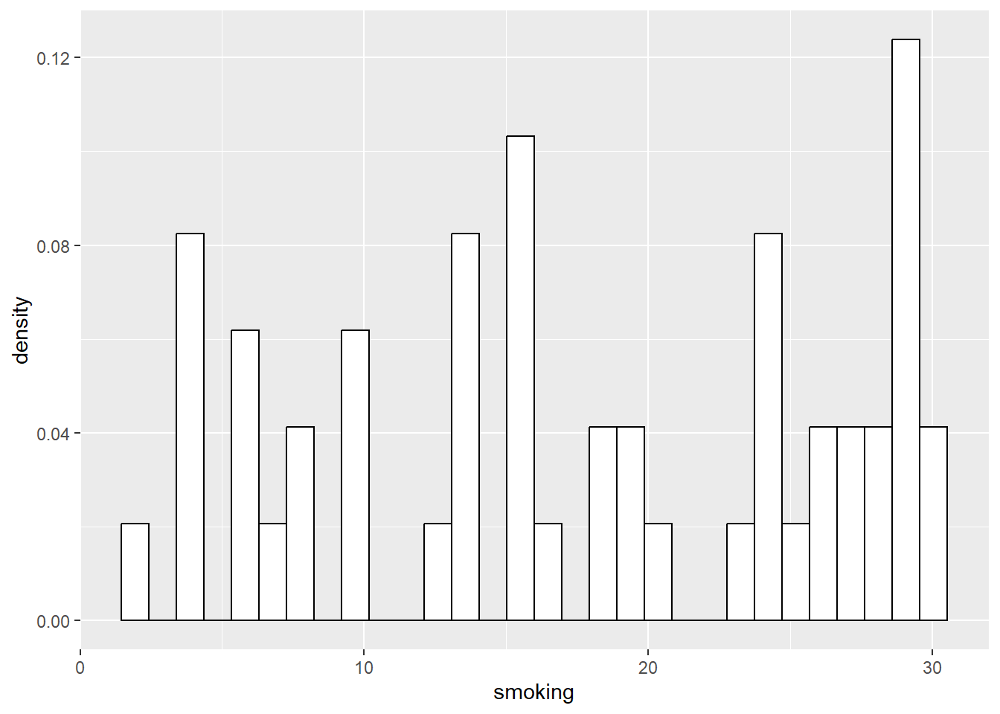
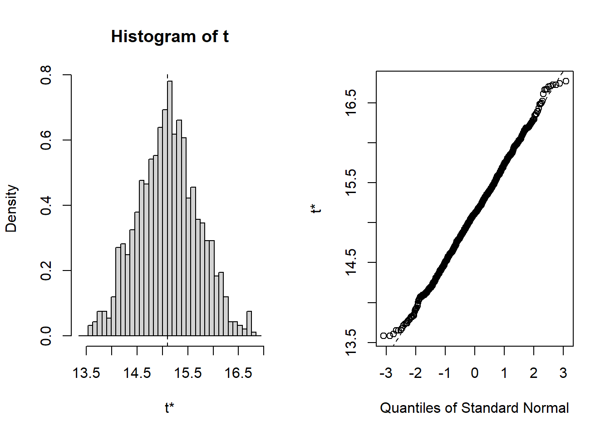
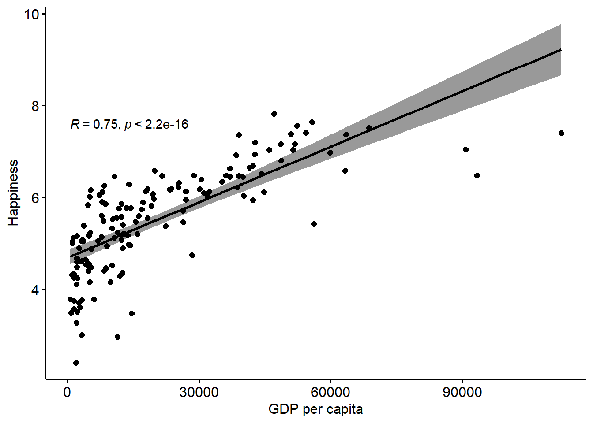

Chapter 8 Run First
In this code, we install all the libraries required to create the DBA Quant Book we need to run these each time we load R to code the book.
Eventually this will be tidied up and duplicates removed, and packages standardized across lessons (e.g. later lessons use things like rstatix and skimr which would help earlier lessons too). For now, let’s just get the whole thing done.
8.2 Lesson 7
First, we load up some data to look at. We’ll begin by looking at some COVID data. Here is some data from Johns Hopkins University as at April 26 2022 by country about cases, deaths, and mortality for COVID. I’m going to use the top 20 countries in terms of raw number of cases
So, to demonstrate how we can easily change people’s views of a data set, let’s run some bar charts:

That’s ugly. We could change the orientation of the labels, but it’s easier to change the orientation of the bars…
That’s nice. The basic conclusion we can draw is everyone is pretty much the same in terms of survival rate, although Mexico is a bit down.
Interestingly, it seems to me that the variation is more pronounced in this presentation where you look ‘down’ a line of results, than above where you look across.
Anyway, if I wanted to make everyone think that COVID survival rates were really different, there’s a simple trick I could use:

Wow, how do you like that! What’s different?
Changing the scale of the axis is an old trick, and when used to manipulate opinion it’s a bad thing. However, there is a case to say we need to know what we want to say, before we decide how to say it. When does ‘making sure we see the right message’ move into ‘outright manipulation / misrepresentation?’.
Here’s another common way this type of data is presented in media and non-scientific reports:

or a variant:
Technically, it’s wrong to present this data in a line chart, because it is discrete values and does not represent a trend, but it is surprisingly common - probably because it ‘looks more sciency’…
Ironically, there is some logic behind using line charts with this sort of data, depending on what you are trying to get across - let’s move to excel to demonstrate…
While we’re at it, we’ll also look at pie charts…
Back to slide deck…
8.3 Box Plots



Interesting stuff, just from the box plot. But, while box plots are nice, they can also obscure stuff. Adding the jitter helps, but there are other ways to display this type of data.
8.4 Violin Plots
# create a dataset
data <- data.frame(
name=c( rep("A",500), rep("B",500), rep("B",500), rep("C",20), rep('D', 100) ),
value=c( rnorm(500, 10, 5), rnorm(500, 13, 1), rnorm(500, 18, 1), rnorm(20, 25, 4), rnorm(100, 12, 1) )
)
# Plot
data %>%
ggplot( aes(x=name, y=value, fill=name)) +
geom_boxplot() +
scale_fill_viridis(discrete = TRUE, alpha=0.6) 
Let’s add jitter:
# create a dataset
data <- data.frame(
name=c( rep("A",500), rep("B",500), rep("B",500), rep("C",20), rep('D', 100) ),
value=c( rnorm(500, 10, 5), rnorm(500, 13, 1), rnorm(500, 18, 1), rnorm(20, 25, 4), rnorm(100, 12, 1) )
)
# Plot
data %>%
ggplot( aes(x=name, y=value, fill=name)) +
geom_boxplot() +
scale_fill_viridis(discrete = TRUE, alpha=0.6) +
geom_jitter(color="black", size=0.4, alpha=0.9) 
Well, look at that. B has a bimodal distribution…
Lets look at the violin plot to emphasize this:
# create a dataset
data <- data.frame(
name=c( rep("A",500), rep("B",500), rep("B",500), rep("C",20), rep('D', 100) ),
value=c( rnorm(500, 10, 5), rnorm(500, 13, 1), rnorm(500, 18, 1), rnorm(20, 25, 4), rnorm(100, 12, 1) )
)
# Plot
data %>%
ggplot( aes(x=name, y=value, fill=name)) +
geom_violin() +
scale_fill_viridis(discrete = TRUE, alpha=0.6) Neat!
Another way to visualize this is with ‘ridges’, which basically compare the densities of variables together:
# create a dataset
data <- data.frame(
name=c( rep("A",500), rep("B",500), rep("B",500), rep("C",20), rep('D', 100) ),
value=c( rnorm(500, 10, 5), rnorm(500, 13, 1), rnorm(500, 18, 1), rnorm(20, 25, 4), rnorm(100, 12, 1) )
)
# Plot
data %>%
ggplot( aes(x=value, y=name, fill=name)) +
geom_density_ridges()## Picking joint bandwidth of 1.03
Cool. This brings us to the idea of….
8.5 Describing Variables and Distributions
Let’s load up some more data. Here’s some GDP per head data from the World Bank:
We have a number of choices as to what to do here, but the first thing we might do is plot a histogram with the data:
## `stat_bin()` using `bins = 30`. Pick
## better value with `binwidth`.## Warning: Removed 15 rows containing
## non-finite values (`stat_bin()`).
We can change the ‘width’ of the bars with the Binwidth operator:
## Warning: Removed 15 rows containing
## non-finite values (`stat_bin()`).
And, we can overlay a density distribution on it:
ggplot(GDP, aes(x=GDP2020))+geom_histogram(binwidth=10000, aes (y=..density..), colour="black", fill="white")+
geom_density(alpha=.2, fill="#FF6666")## Warning: Removed 15 rows containing
## non-finite values (`stat_bin()`).## Warning: Removed 15 rows containing
## non-finite values
## (`stat_density()`).
So, here we have some idea of the distribution. It’s clearly skewed quite heavily, with some outliers at the high end. Let’s summarize this with some numbers:
## Min. 1st Qu. Median Mean 3rd Qu. Max. NA's
## 233.8 2127.5 6117.5 15162.6 18072.4 173688.2 15descr(GDP,
headings = FALSE, # remove headings
stats = "common" # most common descriptive statistics
)## Non-numerical variable(s) ignored: Country Name##
## GDP2020
## --------------- -----------
## Mean 15162.61
## Std.Dev 22146.53
## Min 233.84
## Median 6117.49
## Max 173688.19
## N.Valid 251.00
## Pct.Valid 94.36Let’s chat about these for a bit…
Back to slide deck
8.6 Transformations
## Warning: Removed 15 rows containing
## non-finite values
## (`stat_boxplot()`).## Warning: Removed 15 rows containing missing
## values (`geom_point()`).
As you can see, the data is heavily skewed, or ‘squished’ towards the bottom. This makes it hard to see any patterns by eye.
We can make it easier to interpret by transforming the variable. Here, using a logarithmic transform.
Let’s run the box again:
## Warning: Removed 15 rows containing
## non-finite values
## (`stat_boxplot()`).## Warning: Removed 15 rows containing missing
## values (`geom_point()`).
Nice, see how the spread is easier to interpret here? Log transforms are essentially ‘inverse exponentials’, so what they do is bring down extreme high outliers.
Let’s see this in some more plots:
ggplot(GDP, aes(x=GDP2020LOG))+geom_histogram(binwidth=0.5, aes (y=..density..), colour="black", fill="white")+
geom_density(alpha=.2, fill="#FF6666")## Warning: Removed 15 rows containing
## non-finite values (`stat_bin()`).## Warning: Removed 15 rows containing
## non-finite values
## (`stat_density()`).
## Warning: Removed 15 rows containing
## non-finite values
## (`stat_ydensity()`).
Compare the violin of the log transformed variable with the original:
## Warning: Removed 15 rows containing
## non-finite values
## (`stat_ydensity()`).
In fact, we can use the log transform to revisit some of our COVID data back in EXCEL…